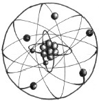

Bir atom, elementin tüm kimyasal özelliklerine sahip olan, bir elementin en küçük birimidir. Atom fikri, Yunanlı filozof Democritus’un bir atomu maddenin daha küçük parçalarına bölünmeyecek kadar minik bir taneciği olarak tanımladığı MÖ 530 yılına kadar gider. Atomun modern zamanlardaki algısı, alt bileşenlerini (bilindiği üzere elektronlar, protonlar ve nötronlar) de içerir, ama fikir aynıdır. Tüm maddelerin temel yapı taşıdır.

Modern atom kuramı, tüm elementlerin atomlardan oluştuğunu ve herhangi bir elementin tüm atomlarının aynı olduğunu belirtir. Hidrojen, karbon, oksijen, sodyum, potasyum, altın ve uranyum gibi elementler, bileşim oluşturmak üzere kimyasal tepkimeler yoluyla birbiri ile birleşirler. Örneğin, hidrojen ve oksijen suyu oluşturmak için birleşirler ve sodyum ve klor, tuzu oluşturmak üzere birleşirler.
Bir atomun temel yapısı, atomun büyük kısmı boş uzaydan oluşmasına rağmen, elektronlar tarafından sarılan bir çekirdektir. Çekirdek, nötronlar ve protonlardan oluşan yoğun bir özdür. Nötronların yükü yoktur ve pozitif yüklü protonlardan biraz daha ağırdırlar. Atomdaki proton sayıları, ne çeşit bir element olduğunu belirler. Uranyumun doksan iki protonu varken hidrojenin bir tane vardır. Elementler, protonları kimyasal tepkime yoluyla değil ama füzyon ve fizyon yoluyla kazanırlar veya kaybederler.
Elektronlar, neredeyse yok sayılabilir bir kütle ile negatif yüklü parçacıklardır. Çekirdek çevresindeki elektronların hareketi, kimya ve fizikte en tartışılan başlıklardan biri olmaya devam etmektedir. Atomun erken dönem modelleri, dünyanın güneşin çevresinde döndüğü gibi elektronların da çekirdek etrafında dönmesi şeklinde betimlemiştir. Kuantum mekaniğindeki son gelişmeler bilim adamlarını, elektronların orbitaller denen karmaşık dalgalarda, belirgin enerji düzeylerindeki çekirdeği çevreleyerek hareket ettiğine inandırdı.
EK BİLGİLER:
1. Evrenin oluşumunun güncel kuramları, büyük patlamadan sonra, evrenin atomları oluşturmak için çok fazla sıcak olduğunu ileri sürer. Atomların yaratımı, büyük patlamadan 379.000 yıl sonra, sıcaklığın 3.000 kelvine düştüğü zamana kadar büyük ihtimalle gerçekleşmedi.
2. Evrenin erken döneminde, hidrojenin atomların % 75’ini, helyumun % 24’ünü ve diğer elementlerin ise geriye kalan % 1’ini oluşturduğu düşünülür.
3. Protonlar ve elektronlar, kuark (kuramsal zerre) denen daha küçük taneciklerden oluşur ve elektronlar lepton denen daha küçük taneciklerden oluşmuş olabilir.
4. Doksan iki elementin doğada kendiliğinden oluştuğuna inanıldı, ama son zamanlarda bilim adamları doksan dört protonu olan plütonyumun da doğada kendiliğinden var olduğunu keşfettiler.